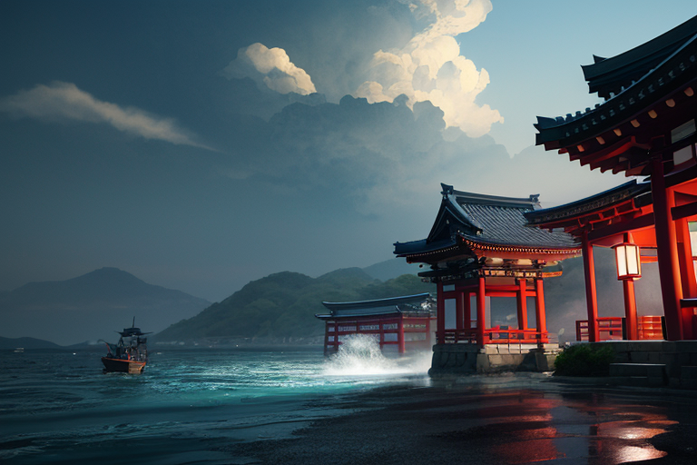
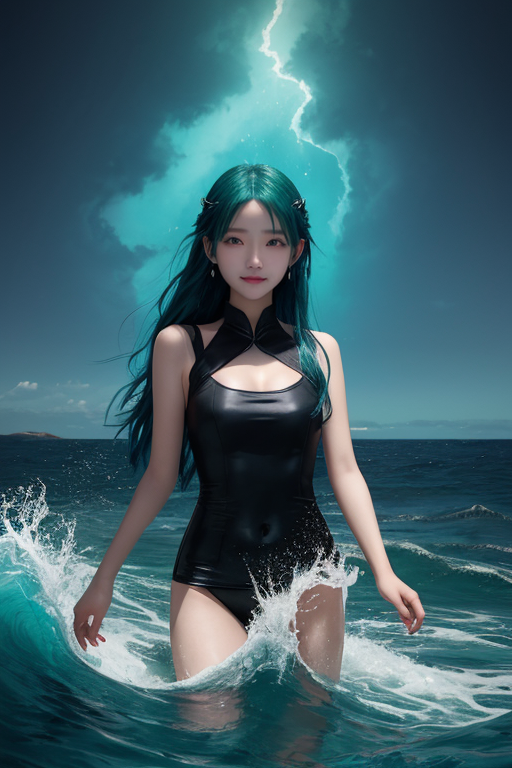
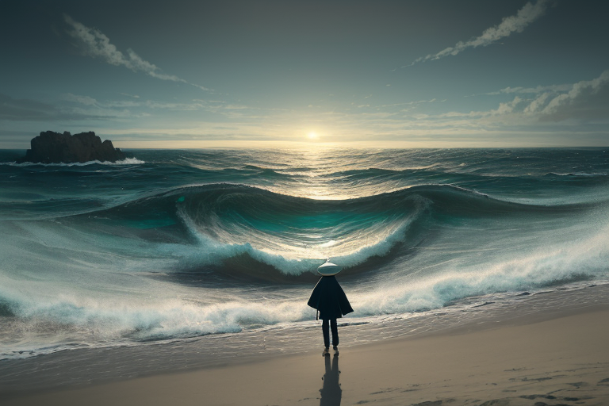
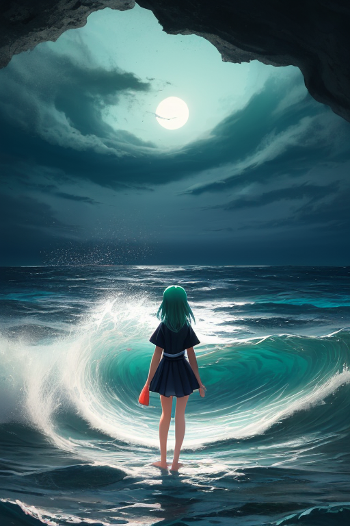
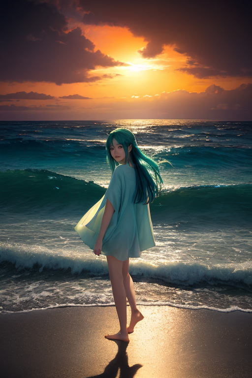

第一章 現実の高知
あなたはまだ気づいていない。この土地にも、王がいることを。
室戸岬の断崖は、黒々とした岩肌を太平洋の荒波に晒していた。ここは、ユーラシアプレートとフィリピン海プレートがぶつかり、沈み込む境界。地図の上ではっきりと線が引かれる、歪みの最前線である。その歪みは時に巨大な力を蓄え、解放する。かつてこの岬は、大地そのものが海底へと沈み、再び隆起した。地殻の呻きが、風景に刻まれている。
高知城の天守から見下ろす町並みは、のんびりとしていた。坂本龍馬が駆け抜け、自由民権の声が湧き上がったこの土地で、人々は今日もかつおのたたきを肴に土佐の酒を傾ける。よさこいの鳴子の音が、どこからか聞こえてくるような気がした。
しかし、静かな日常の底で、何かが眠っている。四万十川の清流が運ぶのは、水だけではない。仁淀川の「仁淀ブルー」と呼ばれる澄み切った青は、時に、底知れぬ深さを暗示する。この土地の自由奔放な気質は、封じ込められたある力の、ただの反映なのかもしれない。海原は穏やかに見えて、その底では、とてつもない質量が、ゆっくりと、確実に動いている。

第二章 歪みの兆候
室戸岬の断崖に立つ奔王は、潮風に銀髪をなびかせていた。足元の岩盤は、目には見えないが、確実に歪んでいる。ユーラシアプレートとフィリピン海プレートがせめぎ合うこの岬は、王国の結界が最も薄い地点の一つだ。
「フリダ」
「はいよ、王」
豪快な笑みを浮かべた主席妖精が、波しぶきを纏って現れた。彼女の手には、土佐の酒を思わせる瓢箪がぶら下がっている。
「結界の『海流』、乱れてきとるな。まるで、底で誰かが息をしているみたいに」
「……ああ」
奔王は短く応じ、赤と青の紋章が浮かぶ掌をかざした。感覚は鋭い。この土地の「自由」の気質そのものが、封印を内側から浸食している。坂本龍馬が夢見た自由も、この地に根付いた民権運動の熱も、すべては封じられた海原の力が、人間の形を借りて漏れ出したものなのか。奔放であることは、この土地の宿命なのか。
彼は孤独を感じた。自分が守るべき歪みの原因が、自分自身の王国の本質と地続きであるという、矛盾に満ちた事実に。

第三章 王の葛藤
桂浜の波は、今日も規則正しく砕けていた。奔王はその音に耳を澄ませる。波の間隔、高さ、砕ける位置。すべてが「海封印」によって調整され、管理された静謐なリズムだ。自由を象徴するこの浜で、海そのものが最も不自由であるという皮肉。
彼は掌を開いた。紋章が微かに脈打つ。四万十川の清流、よさこいの熱気、土佐の酒に宿る闊達さ。この土地のあらゆる「自由」の気配が、封印の結界を微かに揺さぶる。坂本龍馬が志半ばで倒れたように、この地の自由は常に何かに阻まれる宿命なのか。阻んでいるのは、他ならぬ自分自身なのか。
「王よ、迷うな」
フリダの声が背中から聞こえた。彼女の声には、いつもの豪快さはなく、静かな諦めのようなものが滲んでいた。
「この海が本当の姿を見せれば、この浜も、街も、飲み込まれてしまう」
王は目を閉じた。自由とは、他者を巻き込まない自己完結なのか。それとも、自らの力すら解放することなのか。解放は破滅を招く。維持は孤独を強いる。彼の胸に、感情という名の歪みが、重く沈んでいった。

第四章 妖精との対話
桂浜の波音だけが、二人の間に流れた。王は、足元の砂をじっと見つめていた。
「この海は、昔からそうじゃった」
フリダが口を開いた。彼女の声には、長い年月を経た海流のような深みがあった。
「土佐の人間は、海の自由と怖さを、骨の髄まで知っとる。龍馬も、海を見て育った。自由を求める心は、この海がくれたものや。でもな、王よ」
彼女は、沖合の暗い海原を指さした。
「あの底には、あまりに自由すぎる力が眠っとる。海そのものが暴走する力や。もし封印が解けたら、室戸の岬も、四万十の清流も、一夜で形を変えてしまう。俺たちは、それをずっと押さえ込んできた」
「それは……自由の否定か」
王が呟く。
「違う」
フリダはきっぱりと言った。
「自由に泳ぎ回れる海があるからこそ、カツオも回遊してくる。川が自由に流れるから、清流が保たれる。俺たちが封じているのは、『全てを飲み込む自由』や。それは、誰の自由でもない。孤独な暴走や」
カツオラが、そっと付け加えた。
「奔王よ。お前は自由を愛する。ならば、この海が、この土地が、今こうして在る『自由』を、守るべきじゃないか」
守ることは、縛ることか。王は、自らの内に沸き上がる感情の奔流を、静かに見つめた。

第五章「微調整と余韻」
奔王は、自らの翼を、静かに海原線に重ねた。紋章の青と赤が、室戸岬の沖合いで微かに輝く。彼は感情という名の波を、今はただ、調整のための力へと静めていく。封印の亀裂は、彼が自由を愛するが故に、彼自身の内から生じたものだった。守ることは、時に自らを縛ること。その矛盾こそが、この土地に生きる者の、自由の重さなのだ。
彼は、フリダとカツオラの力を導き、乱れた海流を一筋ずつ整えていった。津波の遅延は数秒。地震の揺れは一段階。それだけの、かすかな調整。しかし、そのかすかな調整の積み重ねが、桂浜の砂を、四万十川の清流を、今の形で保っていた。龍馬が夢見、民権運動が叫んだ自由は、決して無秩序ではなかった。自らに課す責任の認識が、真の奔放を可能にするのだ。
作業が終わると、海は以前よりも深い静けさを取り戻していた。しかし、王の胸中には、封印を修復した代償として、ある予感が残った。感情を知った王は、もう、かつての無感情な調整者には戻れない。この先、彼自身の「自由」が、新たな「歪み」を生むかもしれない。その孤独を、彼はそっと抱きしめた。仁淀川のブルーが夕日に染まるように。
あなたの町にも、王がいる。